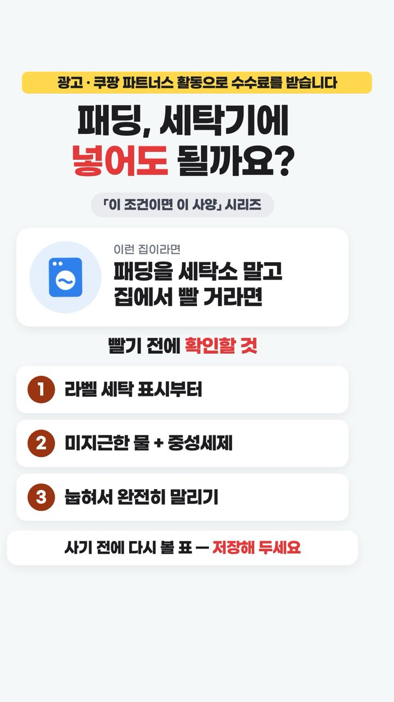

14번 영상
롱패딩 10개 중 6개는 손세탁 표시
광고 이 게시물은 쿠팡 파트너스 활동의 일환으로, 이에 따른 일정액의 수수료를 제공받습니다.
영상에서 비교한 3가지예요. 누르면 쿠팡 검색 결과로 가요.
영상 속 비교표 바로 보기 ↓패딩, 세탁기에 넣어도 될까요?
「이 조건이면 이 사양」 시리즈
이런 집이라면 패딩을 세탁소 말고 집에서 빨 거라면
라벨 → 세제 → 말리기
소비자원·구청 안내
- 라벨 세탁 표시부터
- 롱패딩 10개 중 6개가 손세탁 표시였어요
- 확인: 손세탁·기계세탁 표시
- 미지근한 물 + 중성세제
- 물세탁이 털 기름기를 덜 빼요
- 확인: 세제 뒷면 「중성」
- 눕혀서 완전히 말리고 두드리기
- 뭉친 털은 가볍게 두드려 펴래요
- 확인: 롱패딩 평균 1.3kg, 다 마를 때까지
출처: 한국소비자원(2020.1) · 강남구청(2017.1) · IDFL 다운 시험기관
